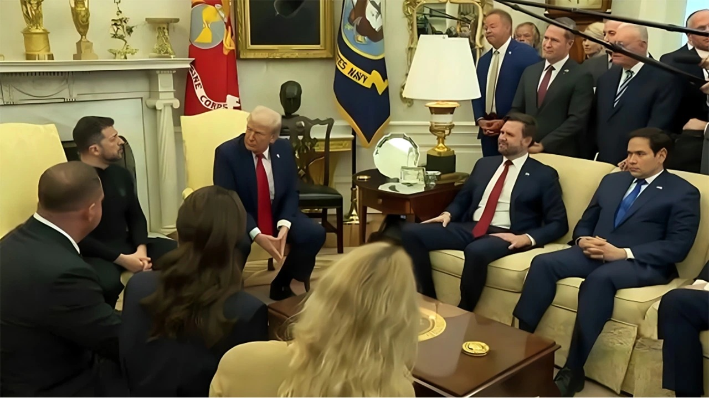
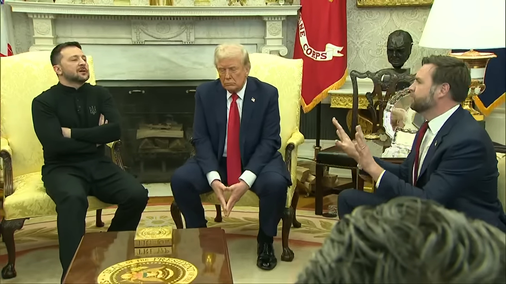
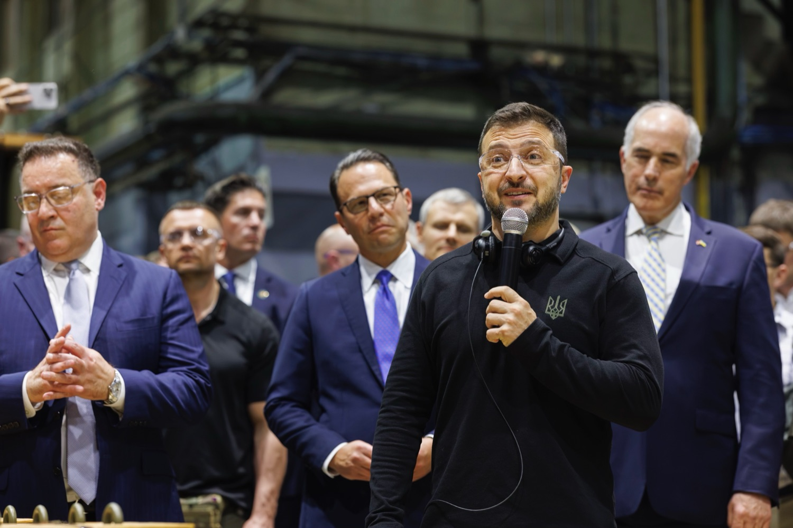

On Friday, February 28 Ukraine President Vladimir Zelensky met with President Donald Trump and Vice President JD Vance for a scheduled news conference in the Oval Office. Zelensky and Trump met in Washington to discuss a minerals deal that would provide the U.S. with access to Ukraine's significant reserves of rare earth minerals and to try to start a mutually beneficial economic partnership with the U.S.
Additional Quotes
Trump started the meeting by saying, “If I were President, this war never would have happened” and later said “If we [Trump-Vance] didn't win, I think this could've very well ended up in a third world war.”
Brian Glenn, a commentator for the Real America's Voice outlet, asked President Zelenskyy: “Why don't you wear a suit? You're in the highest level of this country's office, and you refuse to wear a suit?"
Zelenskyy responded stating, “I will wear [suit] after this war will finish.”
Conversation with Trump, Vance
Trump and Zelenskyy answered various questions over the Ukraine-Russia War and the mineral deal. The answers were mostly respectful and diplomatic. However, the meeting turned tense after Vice President JD Vance said it was time for diplomacy. Zelenskyy challenged Vance's statement by pointing out other ceasefire and agreements that President Putin had broken, going back to 2014.
Zelenskyy then asked, “What kind of diplomacy, JD, you are speaking about?”
This was the start of a contentious exchange between the world leaders.
Vance retorted, “Mr. President, with respect, I think it’s disrespectful for you to come into the Oval Office and try to litigate this in front of the American Media… You should be thanking the President for trying to bring an end to this conflict.”
A minute later, Zelenskyy noted America is far away from the war, but will feel the effects of it in the future, saying “But you have nice ocean and don’t feel now, but you will feel it in the future.”
Trump remarked, “Don’t tell us what we’re going to feel. We’re trying to solve a problem… Because you’re in no position to dictate that. You’re not in a good position. You don’t have the cards right now.”
Zelenskyy replied to Trump accusing him of ‘playing cards’: I’m not playing cards. I’m very serious, Mr. President. I’m very serious.”
Trump, loudly, said: “You’re playing cards. You’re gambling with the lives of millions of people. You’re gambling with World War III… And what you’re doing is very disrespectful to the country, this country that’s backed you far more than a lot of people said they should have.”
Vance then jumped in asking, “Have you even said thank you once?”.
Zelenskyy replied, “A lot of times. Even today.”
Vance Attacks Zelenskyy
After this, Vance claimed Zelenskyy was “campaigning for the opposition” (the Harris-Walz campaign) and asked Zelenskyy if he had “said thank you once”. Our team looked into Vice President Vance’s claim and question. In September 2024, President Zelenskyy met with Pennsylvania Governor (D) Josh Shapiro and visited a munitions factory.
Zelenskyy wrote on X after the visit. "I began my visit to the United States by expressing my gratitude to all the employees at the plant and by reaching agreements to expand cooperation between Pennsylvania and our Zaporizhzhia. It is in places like this where you can truly feel that the democratic world can prevail. Thanks to people like these—in Ukraine, in America, and in all partner countries—who work tirelessly to ensure that life is protected."
This visit was not billed as a campaign event, and was not a campaign event for the Harris-Walz campaign.
According to CNN and various other news sources, President Zelenskyy has said thank you to America 33 times dating back to January 21, 2022, and most recently said thank you to President Trump on February 12th.
In fact, after the contentious meeting, Zelensky wrote on X, “Thank you America, thank you for your support, thank you for this visit. Thank you @POTUS, Congress, and the American people. Ukraine needs just and lasting peace, and we are working exactly for that.”
What's Next?
The mineral deal was not signed. The future of U.S. military aid to Ukraine is up in the air. As always, Paper Tiger Media will keep you informed of any future developments.